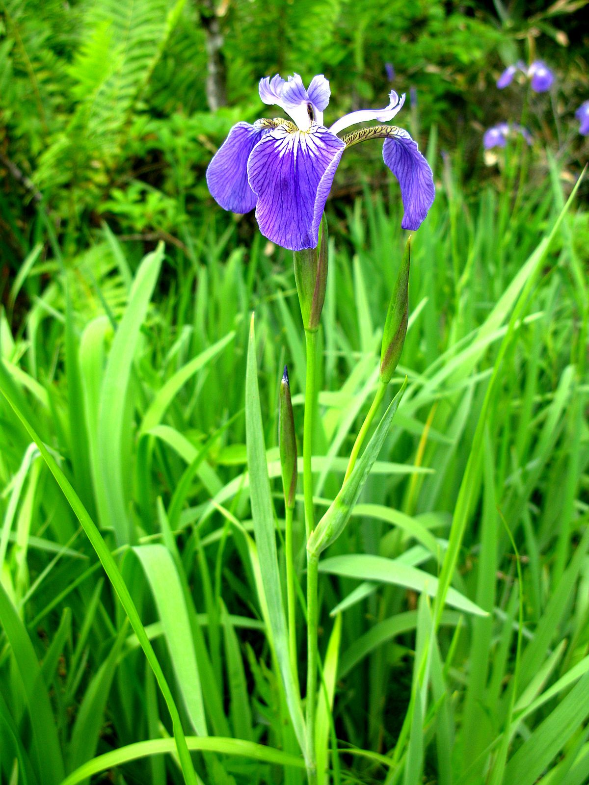

Iris setosa, is a species in the genus Iris, it is also in the subgenus Limniris and in the series Tripetalae. It is a rhizomatous perennial from a wide range across the Arctic sea, including Alaska, Maine, Canada, Russia, northeastern Asia, China, Korea and southwards to Japan.
{% elif versicolor %}virginica

Iris versicolor is also commonly known as the blue flag, harlequin blueflag, larger blue flag, northern blue flag, and poison flag, plus other variations of these names, and in Britain and Ireland as purple iris. It is a species of Iris native to North America, in the Eastern United States and Eastern Canada.
versicolor

Iris virginica, with the common name Virginia iris, is a perennial species of flowering plant, native to eastern North America. It is common along the coastal plain from Florida to Georgia in the Southeastern United States